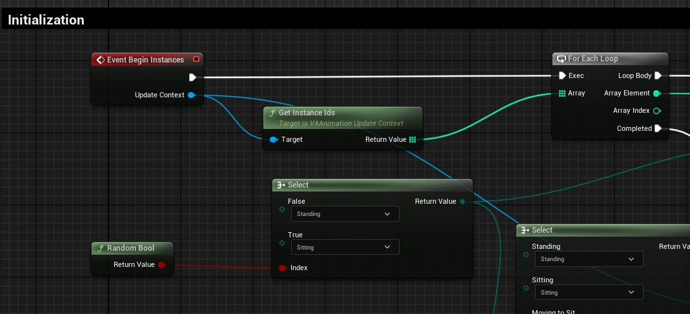
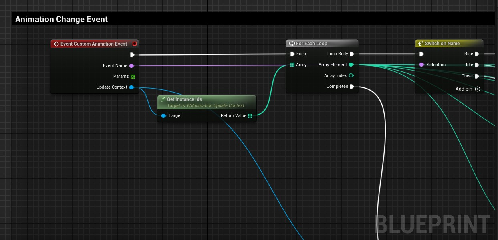
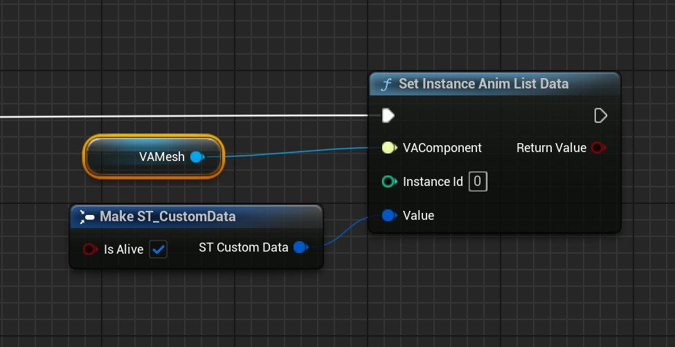
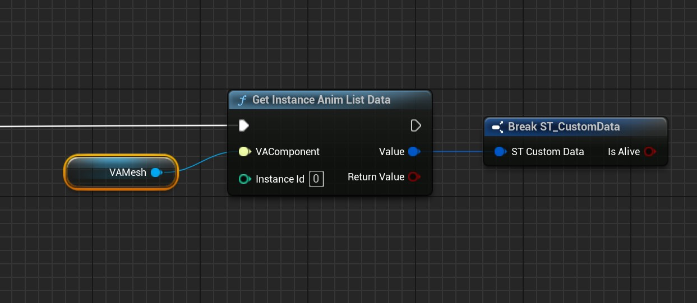

Custom Animation Lists
Animation Lists allow you to create reusable animation behaviors that can be applied to any number of instances. By creating custom Animation List blueprints, you can define complex logic for how animations play, transition, and respond to events.
Creating a Custom Animation List
To create a custom Animation List:
- Create a new Blueprint class
- Select
VAAnimationListas the parent class- Name your blueprint (e.g.,
BP_SoccerFanAnimListLogic)- Open the blueprint and override the events you need

Event Begin Instances
Called when instances are assigned to use this Animation List. Use this to initialize any custom logic or state.
Event End Instances
Called when instances stop using this Animation List. Use this for cleanup.
Event Update Instances
Called every frame for all active instances. Use this for time-based logic or checking transition conditions.
Event Animation Completed
Called when an animation finishes playing. Use this to choose the next animation or transition to a different behavior.
Event Custom Animation Event
Called when events are broadcast from the AVACrowds actor or your custom event system. Use this to respond to gameplay events.
Update Context: All events receive an Update Context parameter that provides functions to control animations (play, pause, set position, etc.) and query current animation state (which animation is playing, current position, play rate, etc.) for any instance.

Working with the Update Context
The Update Context is your primary tool for controlling animations from within your Animation List logic. It provides:
Animation Control Functions
PlayAnimation: Start a new animation for specific instancesPauseAnimation/ResumeAnimation: Pause and resume playbackSetAnimationPosition: Jump to a specific point in the animationSetAnimationPlayRate: Change animation speedSetAnimationLooping: Enable/disable loopingStopAnimation: Stop the current animation
Query Functions
GetInstanceIds: Get all instances using this listGetAnimation: Get which animation is currently playingGetPosition: Get current position in the animation (0-1)GetPlayRate: Get current playback speedGetPlaying: Check if animation is playingGetLooping: Check if animation is looping
Example: For a detailed implementation example, see Plugins/VertexAnimation/Content/DemoMap/Blueprints/SoccerGame/BP_SoccerFanAnimListLogic.uasset
Instance Data System
Animation Lists can store custom data per instance, allowing each instance to maintain its own state and behavior parameters:
Custom Struct Data
Create custom struct types to store per-instance data that your Animation List logic can use:
- State Information: Current behavior state, timers, counters
- Randomization Data: Random seeds, variation parameters
- Logic Parameters: Custom thresholds, triggers, or conditions
- Behavior Memory: Previous actions, history, or context
Instance Data Functions
Use these helper functions to manage per-instance data:
SetInstanceAnimListData: Store custom struct data for a specific instanceGetInstanceAnimListData: Retrieve custom struct data from an instanceClearInstanceAnimListData: Remove stored data from an instance


This system enables complex per-instance behaviors like state machines, conditional logic, and persistent animation behaviors that vary between instances.
Built-in Animation List Types
The plugin includes pre-built Animation List types you can use or extend:
Sequence List
Plays animations in the order they appear in the list. When the last animation completes, it loops back to the first.
Random List
Randomly selects animations from the list. You can configure weights and prevent the same animation from playing twice in a row.
See Also
- Animation Control - Overview of the animation system and modes
- VA Mesh Component - Single character setup
- VA Instanced Mesh Component - Crowd setup
- Crowd Tools - Placement and management tools